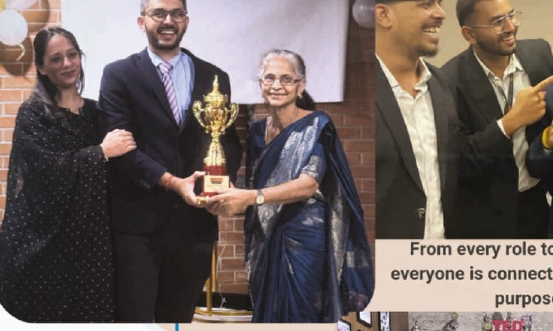

Zorko Group news.
People and progress.
Company milestones, new connections, and the everyday stories behind a growing business.
New connections.
Wider possibilities.

A new route with HPCL.
The magazine documents an agreement with Hindustan Petroleum for the establishment and operation of outlets across highway petrol pumps. The partnership extends the setting in which customers can encounter the Zorko brand.
Read the official brand updates
Joining hands with IndianOil.
Zorko Spotlight also features an agreement with Indian Oil Corporation for outlets at highway petrol pumps. Together, these developments introduce new opportunities beyond the traditional café setting.
A bigger stage.
The same belief.
Shark Tank India Season 3 introduced Zorko’s founders and their business to a national audience. It remains a significant milestone in the company’s published journey.
Explore official achievementsZorko Spotlight.
A closer look inside.
The November 2026 edition brings together the founders’ story, brand philosophy, office photographs, departments, benefits, milestones, and the broader network.
This corporate website draws on that supplied reference and the official Zorko website. Statistics and roles reflect those sources at review time.
View content sources
Practical business and career guides.
Visit our resources for franchise evaluation, consultancy preparation and sales-career questions.